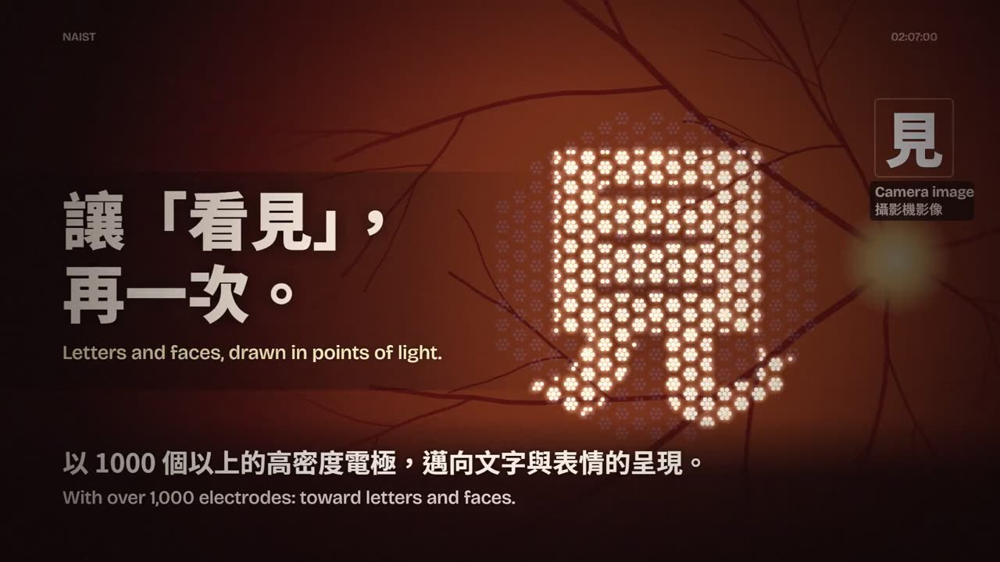

製膜・Make
從溶液長出氧化銥膜
我不用真空設備製作氧化銥膜：化學浴沉積、鈉摻雜氧化銥、以溫和鹼性溶液製作的可彎曲膜、用於 pH 感測的控溫化學浴，以及聚多巴胺－氧化銥複合電鍍。時間解析同步輻射 X 光吸收光譜讓我追蹤薄膜在鍍液中如何形成。
J. Mater. Chem. C 2023・Surf. Interfaces 2024・Surf. Coat. Technol. 2025、2026

特任助理教授日本 奈良先端科學技術大學院大學（NAIST）
用於人工視覺的氧化銥電極
設計晶片與生物體之間的電化學介面。 Designing the electrochemical interface between chips and living systems.
我研究植入式生醫電子使用的氧化銥（IrOx）電極。目前在 NAIST 太田淳教授研究室主導人工視覺研究，把氧化銥電極做進由 CMOS 晶片驅動的視網膜刺激裝置。工作範圍從電極化學與同步輻射 X 光光譜，到裝置整合，再到事後把銥回收。透過雙聯學位，取得奈良先端科學技術大學院大學（2021）與國立陽明交通大學（2023）兩個博士學位。
來信聯絡 tso.kuang_chih [at] ms.naist.jp
Research
視網膜植入物靠幾微米厚的電極和眼睛溝通。我的研究跟著這一層走完它的一生：怎麼做出來、怎麼做進植入物、怎麼刺激，以及用完之後怎麼把銥拿回來。
製膜・Make
我不用真空設備製作氧化銥膜：化學浴沉積、鈉摻雜氧化銥、以溫和鹼性溶液製作的可彎曲膜、用於 pH 感測的控溫化學浴，以及聚多巴胺－氧化銥複合電鍍。時間解析同步輻射 X 光吸收光譜讓我追蹤薄膜在鍍液中如何形成。
J. Mater. Chem. C 2023・Surf. Interfaces 2024・Surf. Coat. Technol. 2025、2026
整合・Integrate
我把氧化銥電極與研究室設計的 CMOS 刺激晶片整合，組裝成可撓的視網膜裝置，包括蜂巢式與多模組設計，製程涵蓋覆晶接合、微焊接與 Parylene C 封裝，再進行體外與體內評估。
AIP Adv. 2021・Micromachines 2025
刺激・Stimulate
人工視覺是主要目標：經由陣列送出的脈衝刺激仍存活的視網膜神經，誘發光幻視，拼出影像（圖 1）。同樣的電極也正和日本、臺灣的合作者一起測試在 pH 與水質感測，以及農業電刺激上的應用。
Micromachines 2025・Surf. Coat. Technol. 2025（pH 感測）
回收・Recover
銥是地殼中最稀少的元素之一，也是綠氫所用質子交換膜電解槽仰賴的觸媒。我把化學浴沉積後殘留的氧化銥奈米顆粒回收，重新做成可用的刺激電極，並延伸到從廢棄的 IrO2 再生銥前驅物。
Ceram. Int. 2024・ECS Meeting Abstracts 2026
Outreach
我也把研究講給實驗室以外的人聽。我為研究室製作了一支人工視覺介紹短片，從視網膜、光幻視，一路講到驅動電極的 CMOS 晶片，有日英、中英兩個版本；另外正在製作一系列 YouTube Shorts，介紹電極與電化學，附中英字幕。

Publications and patents
期刊論文 30 篇，其中第一作者或共同第一作者 7 篇；美國專利核准 1 件、公開申請 1 件。以下為精選論文，† 表示共同第一作者；IF 為 2025 年期刊影響係數（Clarivate，2026 年發布）。
Surface and Coatings Technology 535, 133713・IF 6.9 共同第一作者
Surface and Coatings Technology 514, 132568・IF 6.9 第一作者
Development and evaluation of multi-module retinal devices for artificial vision applications
Micromachines 16, 580・IF 3.5 第一作者
Surfaces and Interfaces 44, 103785・IF 6.0 第一作者
Ceramics International 50, 6220–6228・IF 6.0 第一作者
Journal of Materials Chemistry C 11, 1979–1987・IF 5.1 第一作者
Honeycomb-type retinal device using chemically derived iridium oxide biointerfaces
AIP Advances 11, 095305・IF 1.7 第一作者
Method for making iridium oxide nanoparticles
美國專利 US 11,964,881 B2，2024 年 4 月 23 日核准；專利權人：國立陽明交通大學
Method of chemical deposition of iridium oxide film on rigid substrate
美國專利申請公開 US 2021/0032736 A1，2021 年 2 月 4 日公開
完整論文列表：Google Scholar・ORCID
Teaching and mentoring
每年暑假透過教育部學海計畫的海外實習，在 NAIST 接待並指導國立臺北科技大學的學生，與北科大陳柏均教授、李紹先教授合作。實習生在國際研討會獲得最佳海報獎（SDSE 2024、TACT 2025），其中一位與我以共同第一作者發表期刊論文（Surf. Coat. Technol. 2026）。
目前指導 NAIST 一位博士生的研究，也指導國立陽明交通大學吳樸偉教授研究室的研究生；其中一位碩士生的研究，促成與臺灣一家 DSA 氧化銥電極製造商的產學合作。
共同管理太田研究室的共用設備，負責所有新成員的儀器訓練：濺鍍、覆晶接合、微焊接、Parylene C 鍍膜、黃光微影、恆電位儀、熱蒸鍍與 532 nm 雷射系統。也建立了 AI 輔助的線上實驗室平台（儀器預約、SOP、數據繪圖與分析），以及用 Python 控制的氧化銥脈衝電鍍系統，目前由研究室的博士生使用。
2024、2025 年共同主辦並受邀演講，由 NAIST 經費支持。兩屆共有來自日本與臺灣 10 所大學與企業的 21 位研究者參與，總參加人數約 40–50 人。
Curriculum vitae